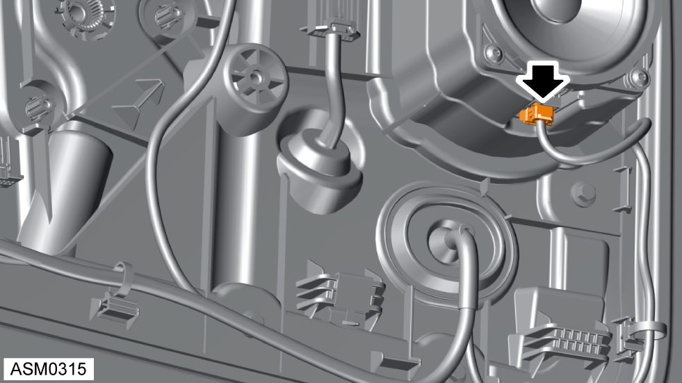
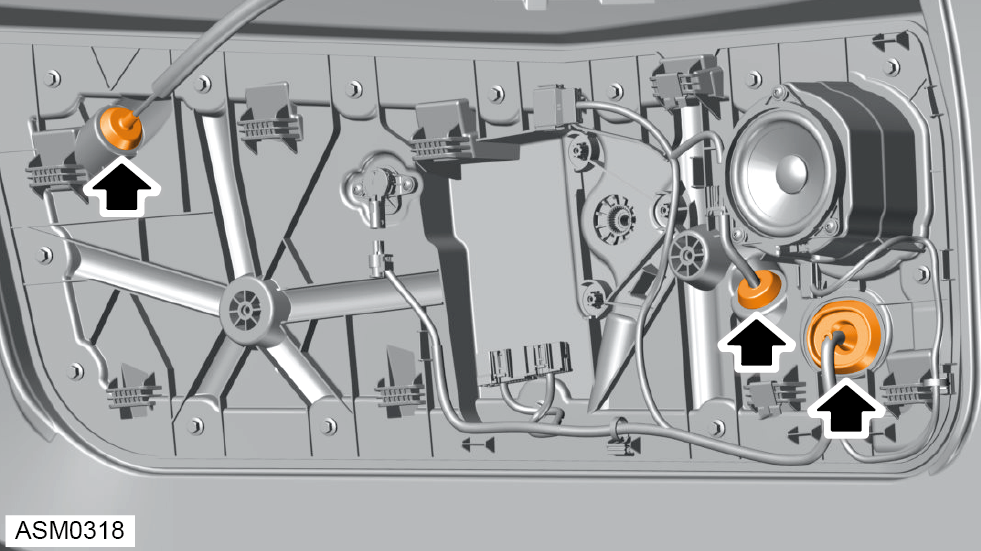
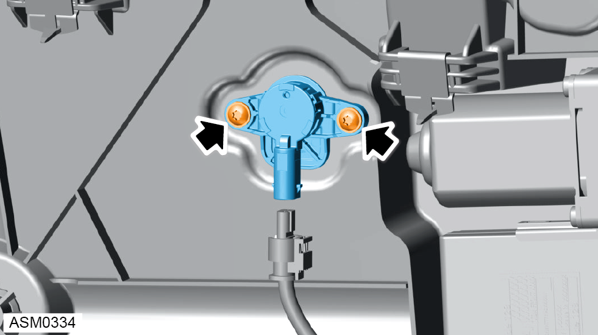

Door Water Deflector Panel - Left Side
Print
Operation Code: 11.02.11-02
Removal
- Remove motor - window regulator - left side. Refer to procedure.

- Disconnect harness connector from door speaker.
- Disconnect harness connector from door pressure sensor.
- Disconnect harness connector from door mirror harness.
- Disengage clips (x2) securing harness to water deflector panel.

- Disengage grommets (x3) from water deflector panel.
NOTE: Push grommets through the panel into the door.
- Remove M6x16 bolts (x15) securing water deflector panel to door panel. Torque 5 Nm.
- Pull through harness and door release cable as you remove the water deflector panel from the door.
- Remove water deflector panel from vehicle.
Do not carry out further disassembly if component is removed for access only
.
- Remove 4x16 screws (x3) securing door speaker to water deflector panel.
- Remove speaker from water deflector panel.

- Remove 5x20 screws (x2) securing door pressure sensor to door water deflector panel. Torque 6 Nm.
- Remove door pressure sensor from door water deflector panel.
Installation
- Installation is the reverse of removal procedure except for the following:
- Reset window one touch facility:
- Fully raise each window, once raised, hold the switch for 2 seconds until a click is heard.
NOTE: Perform with door open.
- Then fully lower each window, once lowered, hold the switch for 2 seconds until a click is heard.
- Close door, raise and lower window to ensure door glass drop is working correctly.